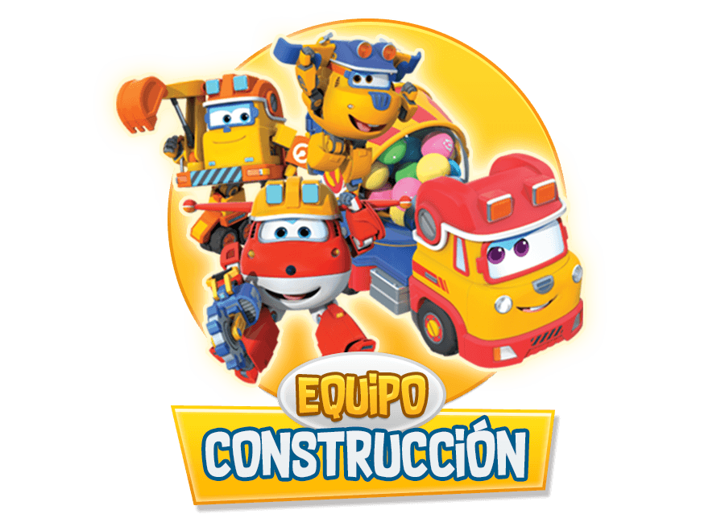
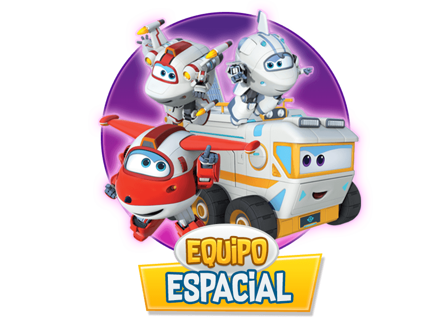

Hello today I am here to
tell you all about the Super Wings Mission Teams
and their Jobs
Team 1 Is the Rescue Riders
 Their job is to keep us safe and give
us help or medical attention whenever we need it.
They first appear in episode 1 Wild Horse Heroes
The members are Dizzy,Zoey and Sparky
Their job is to keep us safe and give
us help or medical attention whenever we need it.
They first appear in episode 1 Wild Horse Heroes
The members are Dizzy,Zoey and Sparky
Team 2 is the Build it Buddies

Their job is to help us with construction
work or anything that involves building
They first appear in episode 2 Treehouse Trouble
The members are Donnie,
Team 3 is the Galaxy Wings

Their job is to help us with anything
that involves space or computers
They first appear in episode 3 Baursaki Blast off
Team 4 is the Wild Team
 Their job is to help us with anything that
involes the ocean
They first appear in episode 4 Lost in the Everglades
Their job is to help us with anything that
involes the ocean
They first appear in episode 4 Lost in the Everglades
Team 5 is the Police Patrol
 Their job is to help us with
anything that involves mysteries or
crime scenes
They first appear in episode 5
The case of the Lost Suitcase
Their job is to help us with
anything that involves mysteries or
crime scenes
They first appear in episode 5
The case of the Lost Suitcase